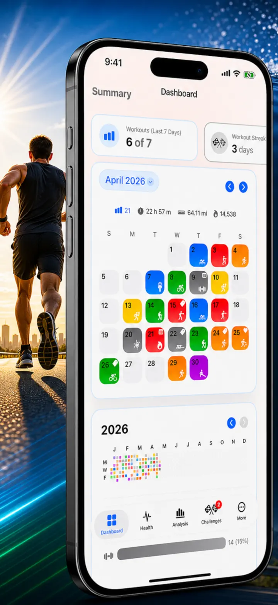
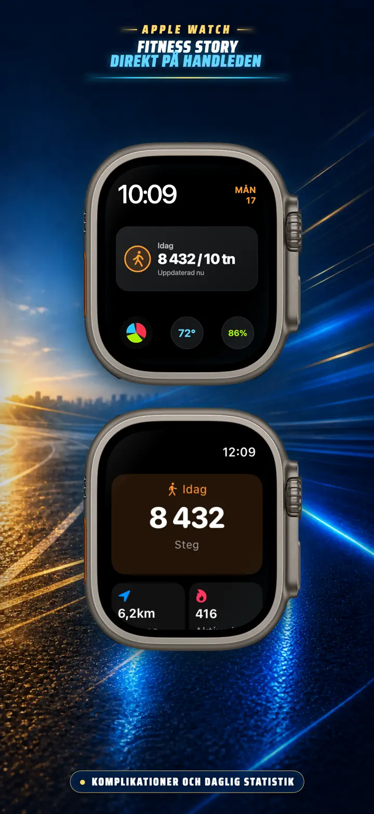
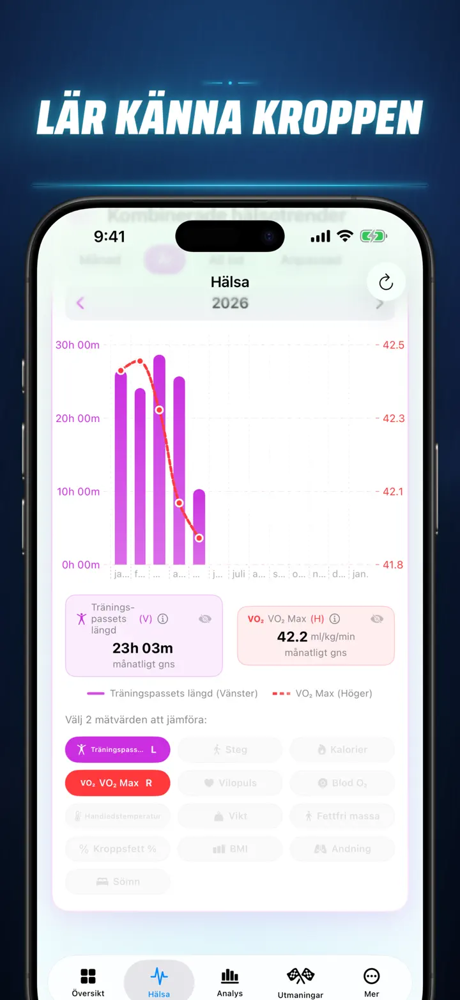
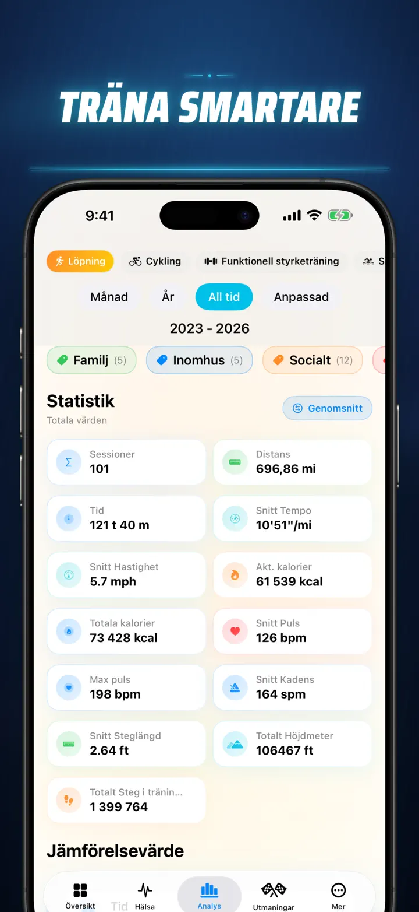
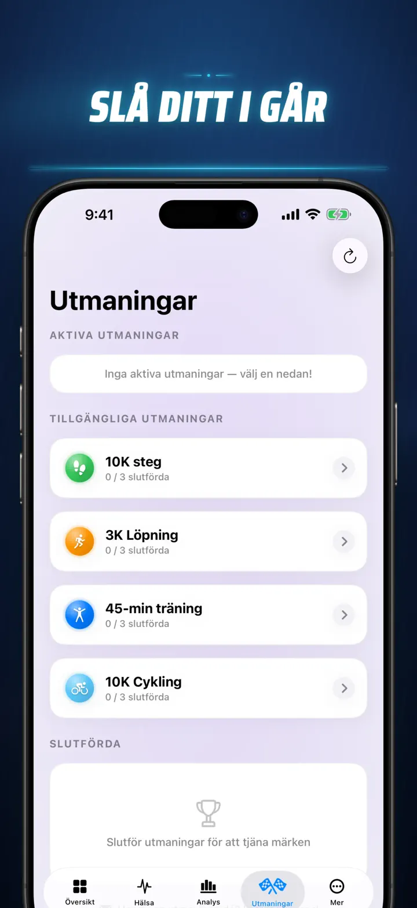
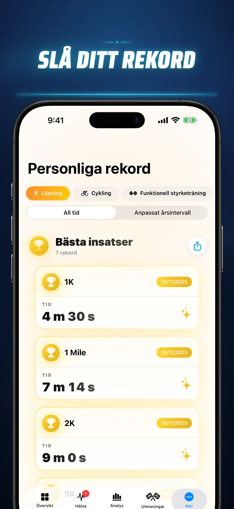
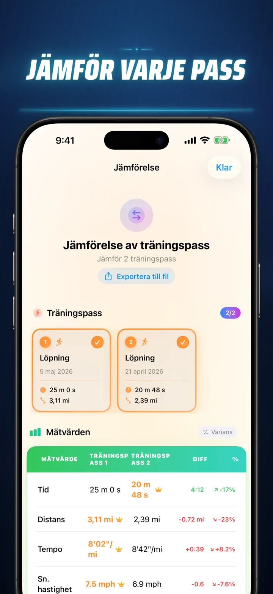
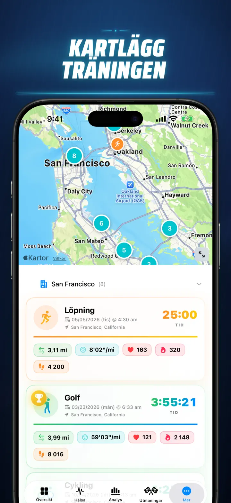
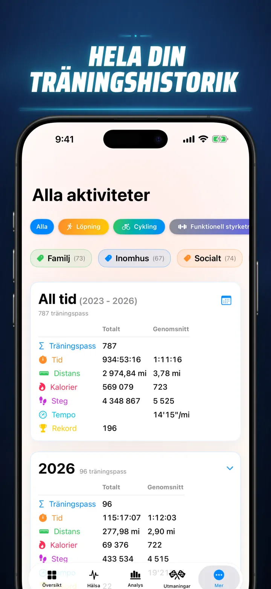

Fitness Story
Upptäck dina träningsinsikter
Nu på Apple Watch: dagens steg på vilken urtavla som helst, plus en Idag-skärm med distans, kalorier och våningar — direkt från Apple Hälsa.
Hämta i App Store
Om appen
Sluta gissa. Börja veta. Fitness Story förvandlar dina Apple Hälsa-data till den mest kraftfulla och detaljerade analysen på iOS. Inga konton. Inga servrar. Bara din hela träningsresa, visualiserad.
Oavsett om du spårar sömnfaser, analyserar löpkadens eller jagar ett maratonrekord – detta är allt-i-ett-dashboarden som ditt hårda arbete förtjänar.
Fungerar med alla enheter och appar som synkar till Apple Hälsa — Apple Watch, Garmin, Polar, Suunto, Zwift med flera.
PROFESSIONELL ANALYS
- Trend- och jämförelsediagram: Använd lådagram för att se median, kvartiler och avvikare för varje sporttyp.
- Detaljerade uppdelningar: Filtrera din historik efter tid på dygnet, distansintervall, varaktighet, tempointervall, höjdökning, kadens och steglängd.
- Ranka allt: Med ett tryck rangordnas dagens mätvärden (distans, tempo, puls m.m.) mot hela din historik. Se direkt om du uppnådde en "Topp 15%"-prestation.
- Bidragsgrafen: En GitHub-liknande värmekarta över hela din träningshistorik. Vänd den för att se detaljerad dagsstatistik.
TRÄNINGSDETALJER OMDEFINIERADE
- Smarta kartor: Färgkoda dina utomhusrutter efter hastighet, höjd eller pulszoner. (Inkluderar Kina-kartkorrigering).
- Djupgående delningsanalys: Visa km- eller mildelningstider med tempo, höjd, puls och kadens för varje enskilt varv.
- Pulszoner: Visualisera tid spenderad i anpassade zon 1–5 baserat på din ålder och vilopuls.
- Rikt sammanhang: Lägg till foton, formaterade anteckningar, ansträngningsbetyg (1–10) och egna taggar till varje träning.
KOMPLETT HÄLSOKONTROLLCENTER
- Allt din Apple Watch mäter, visualiserat på ett ställe med dagliga, veckovisa och årliga trender:
- Hjärt-kärlhälsa: Vilopuls, VO2 Max (åldersanpassat), blodsyra och andningsfrekvens.
- Kroppssammansättning: Vikt, kroppsfett %, mager kroppsmassa och BMI med trendindikatorer.
- Aktivitet och återhämtning: Steg (med timuppdelning), aktiva vs. basalmetabolismkalorier och handledstemp-avvikelser.
- Avancerad sömnspårning: Djup-, kärn-, REM- och vakna faser visualiserade natt för natt.
- Korrelationsöverlägg: Lägg flera hälsomätvärden ovanpå varandra för att se hur sömnen påverkar pulsen eller hur vikten påverkar ditt VO2 Max.
JÄMFÖR OCH TÄVLA
- Träningsjämförelse: Välj upp till 10 träningspass för direkt jämförelse. Se procentuella skillnader (t.ex. "+1,5% Snabbare") för varje mätvärde, per delsträcka!
- Jämförelseexport: Vill du analysera med andra verktyg? Exportera din träningsjämförelse!
- Personliga rekord: Automatisk spårning för 1K, 5K, 10K, halvmaraton, maraton och egna distanser. Tjäna guld-, silver- och bronsmedaljer.
- Story-tidslinje: En kronologisk ström av varje milstolpe, rekord och träning du någonsin genomfört.
DIN DATA, ÖVERALLT
- Global karta: Se varje plats du tränat på en interaktiv världskarta med klustring.
- Kraftfull export: Exportera hela din historik (eller anpassade perioder) till CSV eller JSON. Inkluderar fullständig delningstidsdata, kroppsmätvärden och metadata.
- iCloud-synk: Dina favoriter, taggar, anteckningar och betyg synkroniseras omedelbart på alla enheter.
- Integritet i fokus: Inga dolda servrar. Din data finns på din enhet och i ditt privata iCloud.
- Din svett berättar en historia. Det är dags att läsa den. Ladda ner Fitness Story idag.
Ladda ner Fitness Story och lås upp insikterna!
Privacy Policy: https://masawata.net/privacy-policy.html Terms Of Service: https://www.apple.com/legal/internet-services/itunes/dev/stdeula/
Skärmavbilder








Fitness Story
Nu på Apple Watch: dagens steg på vilken urtavla som helst, plus en Idag-skärm med distans, kalorier och våningar — direkt från Apple Hälsa.
Hämta i App Store